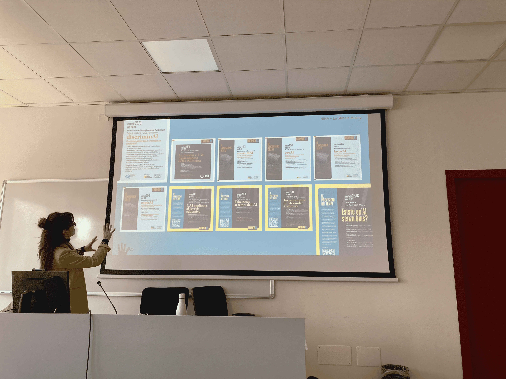
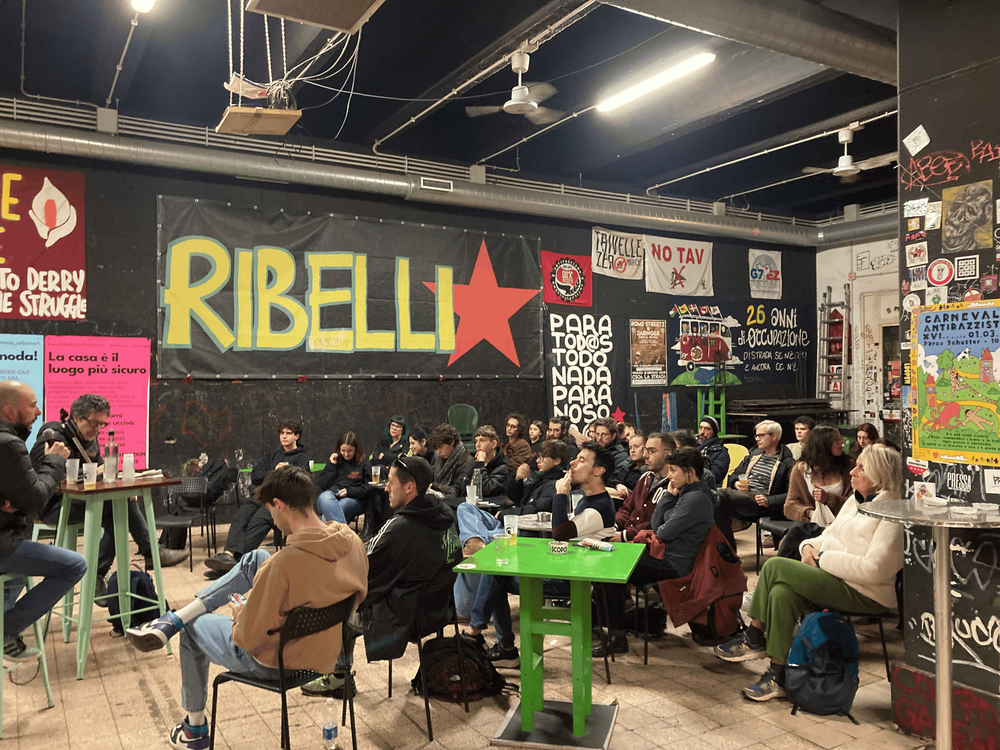
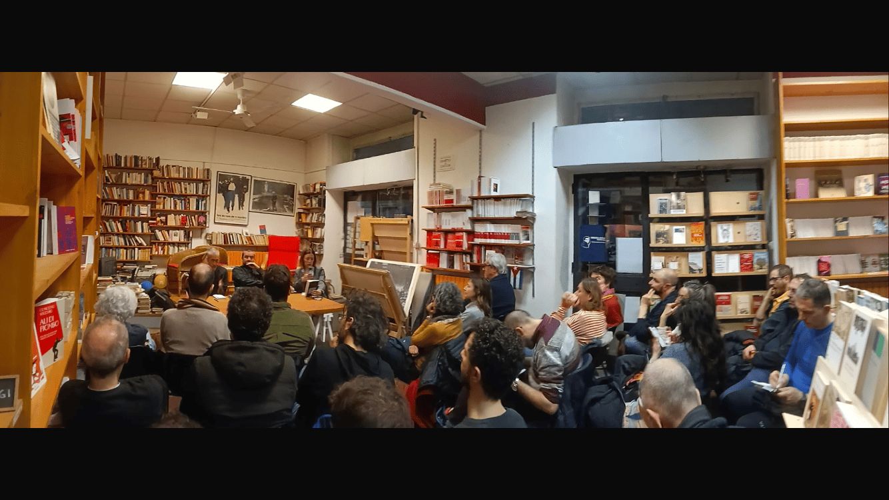

N.i.n.a. acronimo di “Né intelligente né artificiale”, dal titolo del libro di Kate Crawford, è un gruppo di ricerca nato a Milano a gennaio 2024 con lo scopo di indagare quale sarà l’impatto dell’intelligenza artificiale su alcune aree tematiche come i mondi del lavoro, la sostenibilità ambientale, discriminazioni e disuguaglianze vecchie e nuove, la circolazione delle informazioni. E, naturalmente, quali nuove istanze politiche si possono agire in questo contesto.
Si può dire che siamo un gruppo con una composizione che piacerebbe a Norbert Wiener, il padre della cibernetica, che sosteneva che bisognava “attaccare” i problemi informatici organizzando delle squadre mobili di esperti di cose diverse tra loro.


Oppure, pensando a persone che non abbiamo ancora elencato per le competenze, potremmo creare una seconda categorizzazione in base agli interessi:
Ma categorizzare completamente Nina è esercizio impossibile e forse insensato: da questa lista, se la leggessimo al nostro interno, resterebbero fuori almeno una dozzina di persone, che vivono la loro partecipazione dentro Nina principalmente come attivismo, come interesse per il Mondo e tentativo di comprensione. Inutile dire che senza questa enorme dose di curiosità che tutti ci portiamo dentro, non saremmo mai andati da nessuna parte. Tutto questo scambio, che a volte significa chiacchierate di mezze giornate intere, alimenta la volontà ostinata di comprendere le trasformazioni in atto, accedere a saperi qualificati, unirsi per portare nel dibattito pubblico un consenso attorno a un sistema di valori e aggiornare le istanze politiche che gravitano attorno al tema della redistribuzione della ricchezza.
